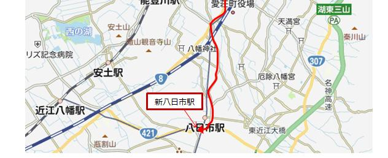
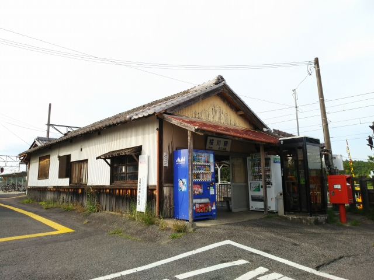

2021（R3）6月2日 近江鉄道駅舎めぐり
梅雨の合間に、湖国を原チャリでうろついてきました。
瀬田駅近くのレンタルバイク屋で原チャリを借りて、
湖岸道路をひた走ります。
途中、漁港がありました。瀬戸内の風景みたいです
ね。
琵琶湖大橋を超えたあたりでひと休み。もうちょっ
と晴れてほしいなぁ。
ここ、来てみたかったんです。
藤森照信の設計した、たねやの施設（ラ・コリーナ）
です。屋根は芝生で、近づいたら、水が常にたれてま
した。
中で出来立てのバームクーヘンが食べれるので、せっ
かくやから食べましたが、めっちゃ高かったっす。
建物のうしろは田んぼになってました。
次の目的地へ。湖岸を走ってると、えり漁の仕掛け
が見えます。琵琶湖らしい光景ですね。
堀切港に到着。やっぱり瀬戸内の港みたいですね。
ここから沖島行の船が出てます。
昔、子どもと沖島へ行ったけど、ここから船に乗っ
た記憶、全くないっすね。
次の目的地の伊庭です。能登川のあたりにある水郷集落の一つです。水路が
町を縦横に巡っていて、日本遺産にも指定されてるようです。
さぁお待ちかねの鉄ネタです。ようやく、本日のメ
インの目的地、近江鉄道は鳥居本駅に到着です。
いい駅舎やねぇ。 なんですが、駅の前が８号線な
ので交通量が多くて、のんびりたたずむ雰囲気でが
ありませんでした。
それに加えて、予定から大幅に遅れてる！急いで戻らな、店が閉まってまう！
電車が到着したのを見届けて、急いで戻ります。
多賀大社に行って糸切餅食べよと思ってたのに、無
理やー
といいつつ、まだ行きたいところが。
いい感じの店なんかもありますが、じっくり見る時
間がない！
じゃ～ん！新八日市駅到着。全然「新」じゃないっ
すね。八日市駅は近代的な駅で、近江鉄道ミュージ
アムもあって寄ってみたかったのですが、時間がな
い！
下校時間にかかってて、結構高校生がおる。意外に
も駅員もおって、ゆっくり写真撮られへんわ。


時間ないけどまだまだ行くよ。八日市から４駅南下したところにある桜川駅。
なんと駅舎は明治３３年の開業時のものやそうです。そんな古いようには見え
へんけどなぁ。
←福岡住みますＳＥみたいに、ホームに寝転んで激写する勇気はなく、これぐ
らいが限界です。

戻る途中の日野駅に隣接して資料館が！駆け足でチ
ェック！
最後の訪問は水口駅です。下校の女子高生だらけで、
駅舎の中に入るのも一苦労でした。
構内の配線も面白いんやけど、この写真で精一杯っす。
このあと、飛ばして瀬田に戻りました。レンタルバイク屋には予定時間過ぎて
到着したけど、お店の人は許してくれました。
帰る途中、福岡住みますＳＥの喜びそうな古い昭和の模型屋があったけど、
立ち寄る時間はありませんでした・・・
とにかく今回は時間がなさすぎ！次は近江鉄道に乗って訪問しますわ。
とほほほ・・・